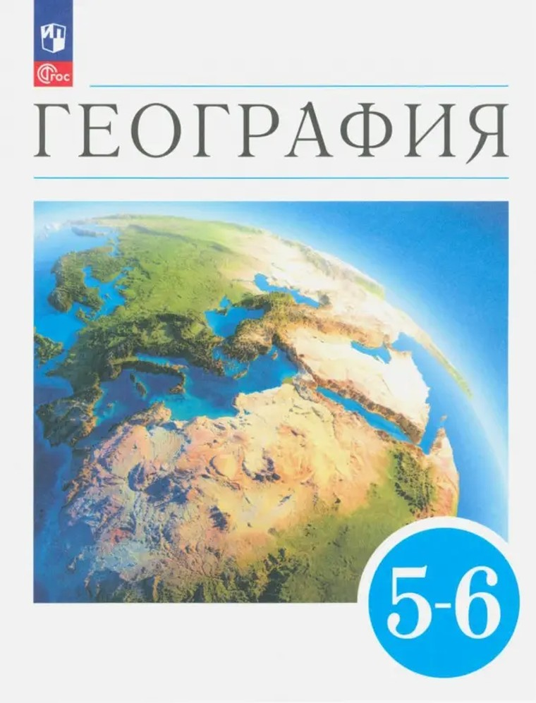

5 класс
›
География
›
Видеоуроки
География. Землеведение. 5—6 классы

География. Землеведение. 5—6 классы
Климанова О. А., Климанов В. В., Ким Э. В. · Просвещение, 2023
С какого параграфа начнём?
По параграфам